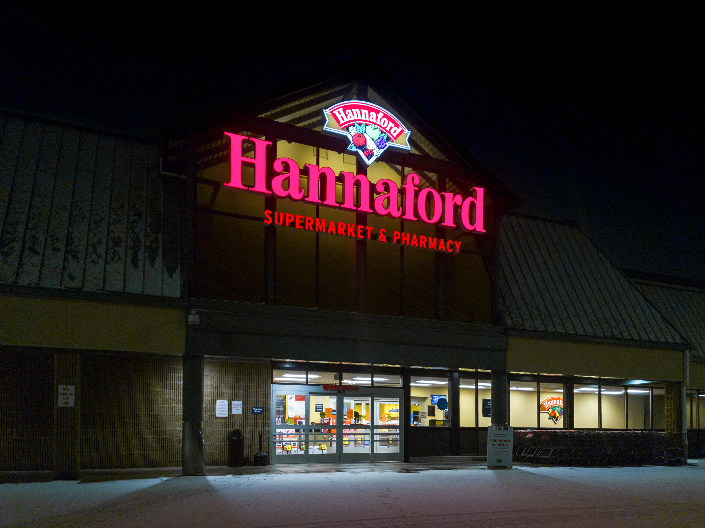

The importance of cybersecurity cannot be overstated, and the results of poor cybersecurity can lead to devastating financial, consumer, and legal consequences. These are the five worst cyberattacks in history.

5. Hannaford Brothers
In 2007, the east coast supermarket chain Hannaford Brothers suffered a SQL injection attack in which the information of 130 million credit and debit cards was stolen. Albert Gonzalez and his team of co-conspirators were later arrested, and Gonzalez was indicted on three different counts, the other two being the cyberattacks on Dave and Busters as well as TJ Maxx. Gonzalez himself was sentenced on March 25, 2010 to 20 years in federal prison and is scheduled to be released on July 27, 2023. Hannaford Brothers total losses from this cyberattack were estimated to be 252 million dollars.
4. Yahoo!
Subject to two separate cyberattacks, one in 2013 and the other in 2014, all of Yahoo!'s 3 billion user accounts were reported to have been affected by what has been said to be the largest discovered data breaches in the history of the internet. Canadian hacker Karim Baratov, the only man who was ever arrested for the crime, was sentenced in 2018 to 5 years in prison and ordered to pay $2.25 million dollars in restitution to his victims. The cost to Yahoo! for this data breach is estimated to be in the range of $350 million dollars. Yahoo! has received heavy criticism for their refusal to immediately inform the public and their users of these security breaches.
3. United States Department of Veterans Affairs
In 2006, the home of an employee of the VA was subject to burglarizing, resulting in the theft of the employee's personally-owned laptop in addition to an external hard drive, which contained the personal information of an estimated 26 million United States veterans and military personnel. This stolen information included full names, social security numbers, birth dates, and service numbers. The VA estimated it would take anywhere from 100 million dollars to 500 million dollars to address the data breach, and in 2009 they agreed to pay veterans a settlement of 20 million dollars after a class-action lawsuit. According to the report issued by the Department of Veterans Affairs Office of Inspector General, the employee from whom the VA's data was stolen was not authorized to take the data home. A link to the report is available here.
2. Epsilon
The international email marketing company Epsilon suffered a database hack in 2011, resulting in the theft of approximately 250 million records among 75 of Epsilon's 2,500 clients. This hijacking of Epsilon's email system allowed the hackers to carry out untold numbers of successful phishing attacks, resulting an estimated total loss of $4 billion between Epsilon and the companies for which they managed email campaign, among which included Capital One and Citigroup. According to the data security company Potegrity, this cyberattack could have been prevented by employing tokenization and consistent security policies.
1. 2017 Ukraine Ransomware Attacks
Using the new Petya malware, in June of 2017, hackers launched a series of ransomware attacks on Ukraine, spreading to many different companies, including Ukraine's electric companies, though the electric companies continued to operate despite access to their computer systems. The total cost of these ransomware attacks was in excess of $10 billion. The United States Central Intelligence Agency, the United Kingdom Ministry of Defence, and the Security Service of Ukraine have all accused Russia of being the perpetrator of this cyberattack, which is widely regarded to be the costliest in history. Security researcher Lesley Carhart told BBC Future "Every method of exploitation that the attack used to spread was preventable by well-documented means."